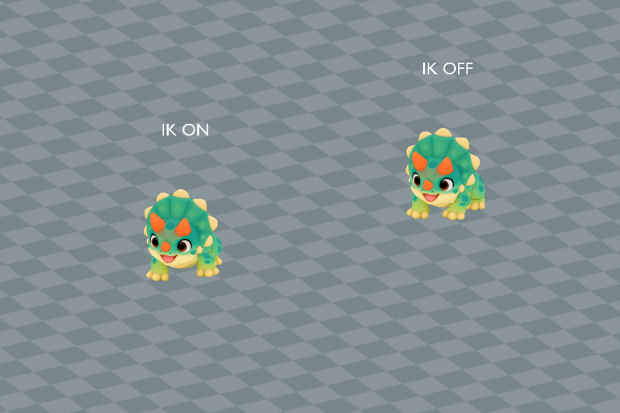

Audio and animation previews, videos and model downloads are retained locally and are not hosted on this website. Text, assessments and still images remain available.
Lost World / Creature profile
Tricerahops
Endangered
Perspective modelling reference · Open image for full size
About Tricerahops
A sturdy mint-green island dweller with teal spots, three orange horns and a broad cream-edged frill. Tricerahops browses fern beds at an easy walk, then springs into low bounds when something catches its eye.
🦘 Spring step: 20% higher jumps. Jumping uses no stamina.
One active creature total: following or mounted. Choosing another replaces the current creature.
Hatch bonuses
First hatch: +15,000 Strength XP and $500,000 Cash. Later hatches: +1,500 Strength XP (10%), with no further discovery Cash.
One first-hatch award per player and species, shared across qualities and sizes. The certificate shows both credited amounts with the skill icon. Fixed amounts are independent of XP boosts. All hatch bonuses
Measurements from the current creature catalogue.
Installed in Studio Edit, quality pass incomplete. Idle and straight Walk score 8.5/10. Run and Swim score 8/10 and need more deformation and movement polish. Blink meets the separate 7.5/10 allowance. Tight turns and speed changes still slide; full movement acceptance remains pending. No gameplay, save or publication performed.
Parent reference masses: Triceratops (8000.00 kg) and Cane Toad (139.00 g). Parent reference sizes: Triceratops: 3 m (height); Cane Toad: 0.125 m (snout-vent body length proxy). Pet weight uses the retained species calibration multiplied by relative height and relative front-to-back length. Both dimensions scale together, so individual mass still scales quadratically. Length includes the tail and uses installed model depth normalized to standard height; it is an extent, not a curved body measurement. One stud is exactly 0.28 metres. Low-bodied parents use body length; the other recorded heights and bird body lengths are size proxies. These are game balance references, with range midpoints and explicit estimates rather than measured population means. Pet height is base height times its internal scale, with no four-stud floor or extra quality height bonus. Pet kg uses scale squared. Egg kg is the base creature kg times scale, and base egg dimensions multiply directly by scale. See the scale tables for the quality bands.
A Standard pet at internal scale 1 hatches at 5.58 studs (1.5624 m) and 4300.60 kg. The base statistics describe catalogue dimensions at scale 1.
Selected guardian of area 3, Lost World. Selection is separate from the current installed guardian and its acceptance. See the current guardian roster.
Egg
Base height
6.805 studs
Base weight
4300.60 kg
The egg and creature share one internal scale. Egg kg is the base creature kg times scale. All base egg dimensions multiply directly by scale, and quality chooses the scale band.
Installed Roblox model
Studio Edit / Idle pose. This is the installed creature in Roblox Studio. Live gameplay acceptance remains separate.
Earlier version / At 0 studs/s / 2026-11-01T13:14:37.034513+00:00
At rest, a slow breath and a small held head glance give the broad frill life while all four paws stay settled. The face and three horns stay together. Movement is intentionally restrained; this body-only preview omits the separately reviewed Blink.
Retained earlier assessment. The current source needs a new review; this number does not approve the changed version.
Offline source skin with current runtime skeletal samples; not a live game capture.
Random facial overlays, blink cosmetics and look-around are omitted.
Earlier version / At 0.7 studs/s / 2026-11-01T13:14:37.034513+00:00
At 0.7 studs/s, the slow four-beat walk keeps three supports through much of each step. Paws lift clearly and the frill remains balanced. Straight fitted contact is clean, but the separate production-controller probe still slides during tight turns and speed changes.
Retained earlier assessment. The current source needs a new review; this number does not approve the changed version.
Offline source skin with current runtime skeletal samples; not a live game capture.
Random facial overlays, blink cosmetics and look-around are omitted.
Authored-cycle timing at the listed preview travel speed; live gameplay speed may differ. The travelling excerpt resets at the loop boundary.
Earlier version / At 16 studs/s / 2026-11-01T13:14:37.034513+00:00
At 16 studs/s, paired hind-leg pushes and a low body lift make Run clearly different from Walk. The long reaching phase flattens the belly and the tucked foreleg loses volume near the elbow. Those deformation defects keep this clip below 8.5 despite the fitted straight contact.
Retained earlier assessment. The current source needs a new review; this number does not approve the changed version.
Offline source skin with current runtime skeletal samples; not a live game capture.
Random facial overlays, blink cosmetics and look-around are omitted.
Authored-cycle timing at the listed preview travel speed; live gameplay speed may differ. The travelling excerpt resets at the loop boundary.
Earlier version / At 8 studs/s / 2026-11-01T13:14:37.034513+00:00
At 8 studs/s, the suspended body and separate paddling arc read as swimming, with a steady frill and face. Foreleg folds remain conspicuous and the hind-leg sweep needs a stronger, more coherent kick. This is usable review material but remains below 8.5.
Retained earlier assessment. The current source needs a new review; this number does not approve the changed version.
Offline source skin with current runtime skeletal samples; not a live game capture.
Random facial overlays, blink cosmetics and look-around are omitted.
Authored-cycle timing at the listed preview travel speed; live gameplay speed may differ. The travelling excerpt resets at the loop boundary.
Both green lids now cover the eyes fully in the front and oblique closed views, without covering the muzzle. They reopen at the existing 0.2-second cadence. The flat rounded covers and straight creases remain visibly simple and raised, so this meets only the 7.5 Blink allowance.
Native Studio Edit snapshots at eleven 20 ms phases of the 0.2-second blink, with 0.8-second open endpoint presentation holds. Reconstructed sampled media, not continuous gameplay. Installed native Edit expression; live gameplay remains separate. Blink pass threshold: 7.5/10. Reviewed 2026-11-01T13:14:37.034513+00:00.
Installed in Studio Edit, quality pass incomplete. Idle and straight Walk score 8.5/10. Run and Swim score 8/10 and need more deformation and movement polish. Blink meets the separate 7.5/10 allowance. Tight turns and speed changes still slide; full movement acceptance remains pending. No gameplay, save or publication performed.
Download every action
Action downloads
Tricerahops action files
Action
GIF
MP4
Idle
Walk
Run
Swim
Blink
Native foot-planting trial
2 November 2026. Rejected prototype, not installed. 5.5/10, Needs work. Body animations require 8.5/10.
Planted sole drift falls from about 1.955 to 0.00025 studs during the sampled turn. The release back to the authored recovery creates a 1.972-stud sole step, compared with 0.300 without IK. The contact improvement does not justify that snap. The separate Run and Swim foreleg deformation remains unresolved.
Local replay of actual native Play bone-world samples, resampled at 15 FPS. Body skin and source colour only; facial cosmetic parts, native PBR lighting and physics are omitted. This is not a Play screen recording. Walking speed: 0.7 studs/s, at 5.58 studs height. Replay is 15 FPS.
View the recorded Walk and turn comparison

| |
The six-creature desktop fixture used two of each species. Median whole-frame time was about 16.71 ms with IK disabled and 16.74 ms enabled. Median measured script body-update time rose from about 0.711 to 0.785 ms. These small isolated samples do not establish mobile or multiplayer cost.
Normal gameplay was left unchanged. Smoother world-space lift-off and recovery, high-speed actions, transitions, terrain and production-driver integration still require verification. No new current-animation pass or developer vote was assigned.
Recorded parent height and weight
These are the exact reference inputs used for this creature. Some are range midpoints or explicit estimates, rather than measured population averages. Height and body length are labelled separately.
Scroll the table sideways on a narrow screen.
Parent inputs and their arithmetic averages. Select a linked value to open its recorded source.
Midpoint of Perth Zoo typical 10 to 15 cm body length. Not standing height.
(Parent 1 size + Parent 2 size) / 2
How the weight was recorded
Representative museum educational reference, not a measured population mean.
Representative 139 gram research sample, not a species-wide mean.
(Parent 1 kg + Parent 2 kg) / 2
Check the calculation at scale 1
Average parent size
(3 + 0.125) / 2 = 1.5625 m
Average parent weight
(8,000 + 0.139) / 2 = 4,000.0695 kg
Chosen game height
5.58 studs x 0.28 = 1.5624 m
Parent-derived creature weight
4,000.0695 x (1.5624 / 1.5625)^2 = 3,999.557507488286 kg
Game balance multiplier
1x; 3,999.557507488286 x 1 = 3,999.557507488286 kg (historical parent baseline)
Retained height-only calibration
3,999.557507488286 kg
Length correction
3,999.557507488286 x 6 / 5.58 = 4,300.599470417512 kg
Catalogue creature weight
4,300.599470417512 kg
Base egg height, 50/50 blend
1.8 x sqrt((5.58 / 4) x (4,300.599470417512 / 4)^(1/3)) = 6.804628866761 studs
Matches the recorded averages and catalogue weight.
Game height is chosen for the creature design; it is not the average parent height. Individual pet height and length both multiply by saved scale. Weight uses their product, so uniform scaling remains quadratic. Values above are displayed to twelve decimal places; calculations use the full recorded values.
Scale, egg weight and carrying impact
These ranges use the actual quality bands and shared creature scale. Most rolls are near the midpoint.
Computed ranges at each quality. Carry speed is a percentage of normal movement before other modifiers.
Base rates are per second for a creature placed at Home. Eggs still incubating and creatures in inventory do not earn. Currency starts at $0. Hatched pets placed in your Home garden pay into your wallet every second while you are online. The currency is Cash. Normal income scales with saved size and quality: Standard 1x, Fine 2x, Superior 4x, Epic 8x and Legendary 16x. Followers do not earn garden income; active petting temporarily gives the petted creature 3x. See Game mechanicsXP and skill levels for the full rules. Grim Peeper pets earn $10 per second.
Reviewed
Reviewed means Daniel has reviewed the in-game model and animations and is happy with them.
Daniel tells Codex when he approves how a model looks and works. Codex records Daniel's approval and updates this shared site. Reviewed shows a tick when Daniel is happy with the in-game model and animations.
✗ Not reviewed
Daniel: ✗ Pending
Real model, 16-bone local rig, four body actions, Blink, species egg, all five finishes, approved stats and matching artwork installed. Run, Swim and full movement still need work. Separate Daniel review remains pending.
Pet icon
The face icon used in the game. Labraduck also represents the Pets menu.